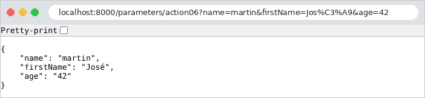

3. O modelo da action
Uma action precisa das informações enviadas pelo navegador: os parâmetros da URL ([?name=martin&age=42]), os campos de formulário, o corpo JSON da requisição e, às vezes, um cabeçalho HTTP da requisição. O curso original se refere a todas essas informações como o modelo da action. Este capítulo mostra como uma action do [Laravel] obtém essas informações, as converte para o tipo correto e as valida. Esse processo se chama data binding.
[Laravel] fornece acesso às informações da requisição por meio do objeto [Request] (exemplo 05), na forma de strings, junto com alguns métodos de conversão. Para verificar os dados, ele dispõe de um sistema completo de validação: os dados esperados são descritos por meio de regras (“obrigatório”, “um inteiro entre 0 e 150” etc.), e o [Laravel] verifica se os dados as cumprem. Primeiro leremos os parâmetros manualmente (exemplo 07) e depois usaremos essas regras para validá-los (exemplos 08 a 12). No próximo capítulo, o mesmo sistema validará os formulários HTML.
Nota sobre a terminologia: no próximo capítulo, a palavra “modelo” se referirá principalmente aos dados que uma action passa à sua view. O modelo de uma action, como usado neste capítulo, é aquilo que ela recebe. [Laravel] também usa a palavra *model* para as classes que representam tabelas de banco de dados (capítulo 9): esse é um terceiro significado.
Os exemplos 07 a 12 são executados da mesma forma que os do capítulo anterior: abra um terminal na pasta do exemplo e execute [php artisan serve]; [Ctrl-C] interrompe o servidor. Seus arquivos [bootstrap/app.php] são todos semelhantes: eles adicionam o middleware [ReadableJson] do exemplo 03, o que resulta em um JSON legível. Só os comentaremos quando introduzirem algo novo.
3.1. Exemplo 07: Os parâmetros da URL
Os parâmetros da URL são a parte que vem depois de [?]: [?name=martin&age=42]. Essa parte é chamada de query string (*query string*). Cada parâmetro é um par [name=value]; os pares são separados por [&]. O controller [ParametersController]:
- linha 14: o método [query] da requisição retorna o valor de um parâmetro da URL, já decodificado, ou [null] se ele estiver ausente; nunca causa um erro;
- Linha 15: a action exibe o valor e seu tipo: a função [get_debug_type] retorna o nome do tipo de um valor. Um valor obtido da URL é sempre uma string ([string]). O operador [.] concatena a string interpolada e o tipo;
- linha 22: o método [integer] lê o parâmetro e o converte em um inteiro. Se a conversão falha ([abc]) ou se o parâmetro está ausente, ele retorna 0: a action não consegue distinguir esses casos de uma idade 0 realmente informada, e o erro de entrada passa despercebido. Da mesma forma, existem [float], [boolean] ([1], [true], [on], [yes] são válidos), [string], [date] (exemplo 12), [enum];
- linhas 30–40: um parâmetro obrigatório e uma conversão manual que distingue os dois erros possíveis. [abort(400, message)] encerra a action com uma resposta 400 (*Bad Request*, a requisição é inválida), acompanhada da mensagem (veja o exemplo 03). A função [filter_var] do [PHP], com o filtro [FILTER_VALIDATE_INT], retorna o inteiro contido na string, ou [false] se a string não for um inteiro;
- linha 46: o segundo parâmetro de [integer] é um valor padrão, usado se o parâmetro estiver ausente. Esse é tipicamente o caso do número de página em uma listagem;
- linha 54: não é obrigatório dar à variável [PHP] o mesmo nome do parâmetro da URL. Os mecanismos de busca costumam usar um parâmetro curto, como [q] (*query*);
- linha 61: sem parâmetro, [query] retorna todos os parâmetros da URL em um array associativo, que a action retorna: o [Laravel] o transforma em JSON (veja o exemplo 03).
A tabela de roteamento declara as seis rotas por meio de um laço:
- Linha 8: o laço [foreach] percorre um array: a cada iteração, a variável [$action] assume o valor do próximo elemento. Cada rota recebe o nome de sua action: [Route::get('action01', 'action01')]... A tabela de roteamento é apenas mais um arquivo [PHP]: você pode escrever nela o código que quiser.
Vamos testar cada action com o [curl]. Um parâmetro presente e, depois, ausente:
As aspas em torno de "URL" são necessárias em um terminal: sem elas, o shell interpretaria [&] (que executa um comando em segundo plano no [Linux]) e [?]. O valor [null], quando inserido em uma string, se torna uma string vazia. Um valor que contenha espaços ou caracteres especiais deve ser codificado na URL: um espaço se torna [%20], e [&] se torna [%26] (caso contrário, separaria dois parâmetros). O navegador faz isso automaticamente; com o [curl], é preciso escrevê-lo por extenso. [PHP] decodifica o valor antes que a action o leia:
Conversão com [integer] — bem-sucedida, com falha e, depois, sem parâmetros:
O parâmetro obrigatório da action 03 está ausente e, depois, inválido. Solicitamos uma resposta JSON (cabeçalho [Accept], veja o exemplo 03), que contém a mensagem de [abort]:
Em um navegador, no modo de depuração, uma resposta 400 exibe a página de erro do [Laravel], com a mensagem:

O valor padrão e o parâmetro renomeado:
Por fim, todos os parâmetros de uma vez. O parâmetro [name] aparece duas vezes:
O parâmetro [name] mantém apenas seu último valor: essa é uma regra do [PHP], que veremos novamente no exemplo 10. A idade continuou sendo uma string (["42"], entre aspas no JSON): nenhuma conversão foi solicitada. Em um navegador (aqui, o [Chromium]), o JSON é exibido exatamente como o servidor o formatou; a caixa de seleção “Pretty-print” o indentaria se ele já não estivesse indentado. A barra de endereço também mostra a codificação dos caracteres acentuados na URL ([é] se torna [%C3%A9], com seus dois bytes em [UTF-8]):

Este primeiro exemplo ilustra os limites da abordagem manual: para cada parâmetro, é preciso escrever a leitura, a conversão e o tratamento de valores ausentes e de erros. Com dez parâmetros, o código da action ficaria sobrecarregado por essas verificações. É melhor descrever o que se espera e deixar o framework verificar. Esse é o objetivo do exemplo seguinte.
3.2. Exemplo 08: Um modelo de action descrito por uma classe
[Laravel] valida os dados da requisição por meio de regras de validação. Uma regra tem um nome ([required], [integer], [email]...) e, às vezes, parâmetros ([min:2], [between:0,150]); as regras de um campo são escritas como uma string, separadas por [|], ou como um array. [Laravel] fornece cerca de cem delas. O lugar natural para descrever o modelo de uma action é uma requisição de formulário (*form request*): uma classe que herda de [FormRequest] e cujo método [rules] retorna as regras de cada parâmetro.
3.2.1. O modelo: app/Http/Requests/PersonRequest.php
- Linha 10: a classe ([extends]) herda de [FormRequest], que por sua vez herda de [Request]: um objeto [PersonRequest] é uma requisição, com todos os métodos do exemplo 07, mais regras de validação;
- linhas 13–24: as regras, em um array associativo: para cada parâmetro, a string que contém suas regras;
- linha 17: [required]: o parâmetro é obrigatório (se estiver ausente ou vazio, é rejeitado); [string]: uma string; [min:2] e [max:20]: para uma string, seu comprimento deve estar entre 2 e 20 caracteres;
- linha 19: [integer]: o valor deve ser um inteiro (["42"] é válido, ["abc"] não é); [between:0,150]: para um número, seu valor deve estar entre 0 e 150. As regras [min], [max] e [between] se adaptam, assim, ao tipo do valor: um comprimento para uma string, um valor para um número e um número de elementos para um array (por exemplo, 10);
- linha 21: [in:Mr,Mme,Melle]: um dos três valores listados, e somente esses;
- linha 23: [nullable]: o parâmetro é opcional (é aceito se estiver ausente ou vazio); [email]: se presente, um endereço de e-mail válido;
- linhas 28–33: um método adicionado à classe: ele retorna os dados validados na forma de um objeto [Person] (veja abaixo). [$this->validated()] retorna apenas os dados que foram validados: um parâmetro sem regra não é incluído. A validação realizada pelo [Laravel] verifica os dados, mas não os converte: a idade validada continua sendo a string ["42"]. É o operador de conversão [(int)] que a converte em inteiro. O operador [??] retorna seu operando esquerdo se ele existir e não for [null]; caso contrário, retorna o operando direito: [$values['email'] ?? null] resulta em [null] se o endereço não estiver no array.
Este modelo descreve os dados esperados; ele não contém nenhuma instrução de validação. Isso é conhecido como um estilo declarativo. A classe [Person] é uma classe imutável, nos moldes da do exemplo 03:
- linha 12: [?string]: uma string, ou [null].
3.2.2. A action: app/Http/Controllers/PersonsController.php
- Linha 14: a action exige um parâmetro do tipo [PersonRequest], enquanto o exemplo 07 exigia um [Request]. O [Laravel] então cria um objeto [PersonRequest] a partir da requisição atual e o valida antes de chamar a action: ele verifica cada regra de cada parâmetro. Se todas as regras forem cumpridas, a action é chamada. Caso contrário, o [Laravel] lança uma exceção [ValidationException], que contém uma lista de todos os erros (não apenas o primeiro), e a action nunca é chamada: ela, portanto, não precisa lidar com dados inválidos;
- Linhas 16–20: a action retorna os dados validados como estão e, depois, como um objeto [Person], junto com o tipo da idade, para ilustrar a diferença.
Quem trata a exceção [ValidationException]? Por padrão, o próprio [Laravel] , e sua resposta depende do cliente. Para uma requisição que espera JSON (cabeçalho [Accept: application/json]), a resposta é um 422 (*Unprocessable Content*), que descreve os erros em JSON. Para uma requisição comum, originada de um formulário HTML, a resposta é um redirecionamento para a página anterior, com os erros preservados para o formulário que será reexibido (veremos isso no próximo capítulo). Aqui, queremos uma resposta de erro em JSON, em todos os casos, com o código 400. Esse é o papel do [bootstrap/app.php].
3.2.3. Tratamento de erros: bootstrap/app.php
- Linhas 17–30: o método [withExceptions] agora recebe uma função, que recebe o objeto [$exceptions] que descreve o tratamento de exceções da aplicação;
- linhas 20–29: o método [render] registra um tratador de exceção: uma função que o [Laravel] chama quando uma action lança uma exceção do mesmo tipo que seu parâmetro (aqui, [ValidationException] ou uma classe derivada), e cujo valor de retorno é a resposta enviada. O [Laravel] identifica o tipo da exceção tratada com base no tipo do parâmetro da função. Declarado em [bootstrap/app.php], o tratador se aplica a todas as actions da aplicação: toda action que valida um modelo se beneficia dele, sem precisar escrever uma única linha de código de tratamento de erros;
- linhas 23–27: [$e->errors()] retorna os erros em um array associativo: para cada campo com erro, a lista de suas mensagens de erro. O laço [foreach ($array as $key => $value)] percorre tanto as chaves quanto os valores. [$errors[] = ...] adiciona um elemento ao final do array [$errors];
- linha 28: uma resposta JSON, com código de status 400.
3.2.4. Execução
Um modelo válido:
Os dados validados contêm apenas os parâmetros recebidos; a idade está no formato string; o objeto [Person] contém a idade como inteiro (sem aspas no JSON), e o endereço ausente é [null]. Um nome cercado por espaços ([%20]) e um endereço presente:
Os espaços em torno do nome desapareceram sem que o pedíssemos: dois middlewares, executados pelo [Laravel] para todas as requisições, transformam os parâmetros recebidos antes que uma action os leia. [TrimStrings] remove os espaços em torno de cada string; [ConvertEmptyStringsToNull] substitui cada string vazia por [null]. Agora não há nenhum parâmetro: os três campos obrigatórios estão ausentes.
Quatro campos inválidos de uma só vez:
Todos os erros são informados de uma só vez, permitindo que o usuário corrija tudo de uma vez. Para o campo de idade [abc], apenas a regra [integer] é sinalizada: a regra [between] não se aplica a um valor que não é um número. As mensagens estão em inglês, o idioma padrão do [Laravel]. O exemplo seguinte as substitui por mensagens personalizadas.
3.3. Exemplo 09: Validação realizada pela action
No exemplo 08, um modelo inválido encerra a action, e o tratador da aplicação responde. Isso é conveniente para uma API, cujos clientes são programas que esperam uma resposta de erro padronizada. No entanto, uma página web costuma preferir reexibir o formulário com as mensagens de erro: nesse caso, a action deve decidir como tratar um modelo inválido. As classes [PersonRequest] e [Person] são as do exemplo 08.
3.3.1. Mensagens personalizadas: lang/en/validation.php
As mensagens de erro do [Laravel] não estão fixas no código: cada mensagem é identificada por uma chave, e um arquivo de idioma associa um texto a cada chave. Os arquivos em inglês são incluídos com o framework; a aplicação pode fornecer seus próprios arquivos na pasta [lang], com uma subpasta por idioma, para substituir essas mensagens ou para adicionar outros idiomas. O idioma da aplicação é definido pelo arquivo [.env]:
O arquivo de mensagens de validação se chama [validation.php]:
- Linha 6: um arquivo de idioma é um arquivo [PHP] que retorna um array associativo: para cada chave, seu texto correspondente;
- linhas 7–11: a chave de uma mensagem de validação é o nome da regra que falhou. Essa técnica (traduzir com base no nome do erro, e não em seu texto em inglês) é a usada no estudo de caso: os textos ali são identificados por chaves, que são traduzidas para o idioma do usuário;
- linhas 15–19: as regras que se adaptam ao tipo do valor (por exemplo, a 08) têm uma mensagem para cada tipo: [string], [numeric], [array]. Os identificadores [:min] e [:max] são substituídos pelos parâmetros da regra ([min:2] significa “pelo menos 2 caracteres”). A tag [:attribute], que não usamos, seria substituída pelo nome do campo.
Uma chave ausente deste arquivo mantém a mensagem em inglês do framework: o [Laravel] mescla o arquivo da aplicação com o seu próprio. Para outro idioma, uma chave ausente recorre ao idioma de contingência, [APP_FALLBACK_LOCALE], que por padrão é o inglês. Traduções completas das mensagens do [Laravel], em muitos idiomas, são publicadas pela comunidade (o pacote [laravel-lang]).
3.3.2. A action: app/Http/Controllers/PersonsController.php
- Linha 16: a fachada [Validator] cria um validador — um objeto que aplica regras a dados. Os dados são os parâmetros da URL; as regras são as da classe [PersonRequest] do exemplo 08. Uma requisição de formulário é uma classe como qualquer outra: é possível criar uma instância dela, por meio de [new], para ler suas regras;
- linha 17: [fails()] executa a validação e retorna [true] se pelo menos uma regra falhar. A própria action determina o que acontece em seguida: nenhuma exceção é lançada;
- Linhas 19–23: os erros, campo por campo. [errors()] retorna um objeto [MessageBag] (uma “sacola” de mensagens), cujo método [messages()] retorna o array associativo campo → lista de mensagens. Para cada campo, a primeira mensagem, [$messages[0]], é colocada em uma tag [<li>]. O operador [.=] acrescenta uma string ao final de outra;
- linha 26: os dados validados, em um array associativo;
- linhas 29–30: em caso de sucesso, uma mensagem de boas-vindas. Dentro de uma string entre aspas, [{$person['title']}] insere um elemento do array (as chaves delimitam a expressão). O nome passa pela função [e] do [Laravel] (de *escape*), que substitui os caracteres com significado especial em HTML ([<], [>], [&], ["], [']) por suas entidades ([<], [>]...): elas serão exibidas como estão, em vez de interpretadas. Sem essa precaução, um usuário poderia informar um “nome” contendo HTML, ou até mesmo [JavaScript], que seria executado no navegador de qualquer pessoa que visualizasse a página. Essa é a vulnerabilidade de segurança mais comum na web: a injeção de script (*XSS*, *cross-site scripting*). O título e a idade não precisam dessa proteção: seus valores foram validados pelas regras (um de três valores permitidos, um inteiro). No próximo capítulo, a engine de views [Blade] fará esse escape automaticamente para qualquer valor inserido em uma página.
Uma entrada válida, seguida de uma entrada contendo quatro erros:

A resposta bruta à segunda requisição e a resposta para um nome contendo HTML:
O nome [<b>martin</b>] (codificado como [%3Cb%3E...] na URL) é exibido como está, sem ficar em negrito: suas tags foram neutralizadas. Observe que a resposta, desta vez, tem código de status 200: foi a action que escolheu retornar uma página normal contendo os erros.
3.4. Exemplo 10: Parâmetros múltiplos
Um mesmo parâmetro pode aparecer várias vezes em uma URL: [?color=red&color=green]. É isso que um navegador envia para um grupo de caixas de seleção com o mesmo nome ou para uma lista de seleção múltipla (veja o próximo capítulo). O [PHP] trata esse caso à sua maneira. O controller [ArraysController]:
- linha 15: para o [PHP], os parâmetros da URL formam um array associativo, em que cada chave tem apenas um valor: um parâmetro repetido substitui o anterior, e somente o último valor é mantido. A action também retorna, para comparação, a string bruta de parâmetros como enviada pelo navegador: [$request->server(...)] lê as variáveis que o servidor web transmite ao [PHP], incluindo [QUERY_STRING];
- linhas 20–24: para obter todos os valores, o nome do parâmetro deve terminar com colchetes: [?color[]=red&color[]=green]. O [PHP] então armazena os valores em um array, e o valor do parâmetro [color]. O método [array] da requisição retorna o parâmetro como um array: vazio se estiver ausente, com um único elemento se tiver apenas um valor sem colchetes;
- Linhas 31–36: o array é validado por regras. [array|min:1]: um array com pelo menos um elemento (a regra [min] se aplica ao número de elementos de um array; veja o exemplo 08). A chave [color.*] identifica cada elemento do array: cada um deve ser uma das três cores;
- linha 41: o operador [!] (não) resulta em [true] para um array vazio, que equivale a “falso” em uma condição.
O arquivo [lang/en/validation.php] é o do exemplo 09. Os resultados:
A opção [-g] do [curl] o impede de interpretar por conta própria os colchetes da URL. Um navegador, por outro lado, os codifica ([color%5B%5D=red]), o que o [PHP] também entende. Quanto ao HTML, basta nomear as caixas de seleção de um grupo como [color[]]: é isso que o exemplo 18 fará. Essa regra se aplica especificamente ao [PHP]: os frameworks de outras linguagens ([Flask], [Spring MVC], [ASP.NET Core]) mantêm todos os valores de um parâmetro repetido, sem colchetes.
Validação: bem-sucedida, depois com falha por cor desconhecida e, depois, por lista vazia:
O erro referente à cor desconhecida menciona [color.1]: o campo e o índice do elemento problemático no array (o segundo, com índices começando em 0).
3.5. Exemplo 11: Parâmetros de uma requisição POST
Os exemplos anteriores usavam requisições GET, cujos parâmetros estão contidos na URL. Uma requisição POST transporta seus dados no corpo, em duas formas principais:
- campos de um formulário HTML: o corpo tem a mesma sintaxe de uma query string ([name=martin&age=42]), e seu tipo (cabeçalho [Content-Type]) é [application/x-www-form-urlencoded];
- um documento JSON, enviado por um programa ([JavaScript] em uma página, cliente de uma API...): o tipo é [application/json].
O controller [PostController]:
- linha 18: o cabeçalho [Content-Type] da requisição;
- linha 19: o método [post] retorna os parâmetros do corpo da requisição em um array associativo; [post('name')] retornaria um único parâmetro. Os campos de formulário seguem as regras do exemplo 10: um campo repetido deve ter um nome terminado em [[]];
- linhas 26–27: [isJson()] verifica o tipo declarado pelo cabeçalho [Content-Type]. Um corpo que não é declarado como JSON é rejeitado com um erro 415 (*Unsupported Media Type*);
- linhas 30–34: [getContent()] retorna o corpo bruto da requisição, uma string; a função [json_decode] do [PHP] a desserializa: o texto JSON se torna um valor [PHP] (o segundo parâmetro, [true], exige arrays associativos para os objetos JSON). Com a opção [JSON_THROW_ON_ERROR] (um parâmetro nomeado), um texto malformado gera uma exceção [JsonException], que o [try] / [catch] intercepta para retornar um erro 400. O método [json()] da requisição faria a mesma coisa, mas, para um JSON malformado, simplesmente retornaria um resultado vazio;
- Linha 36: o método [input] procura um parâmetro em todos os lugares: no corpo da requisição — seja um formulário ou JSON — e, depois, na URL. Esse é o método mais usado, porque não depende do formato da requisição;
- linha 42: um campo de formulário, lido por [input];
- linhas 49–56: as regras da classe [PersonRequest] do exemplo 08, aplicadas desta vez aos campos do formulário. O código é o mesmo dos parâmetros da URL: apenas a origem dos dados muda. [sort] ordena as mensagens para garantir uma resposta consistente. O operador ternário [condition ? a : b] retorna [a] se a condição for verdadeira e [b] caso contrário.
A tabela de roteamento declara rotas POST, e o [bootstrap/app.php] desativa a proteção CSRF para essas URLs, como mostrado no exemplo 02:
Com o [curl], a opção [-d] (*data*) envia um corpo; a requisição passa então a ser uma requisição POST, do tipo [application/x-www-form-urlencoded], a menos que a opção [-H] (*header*) especifique um tipo diferente. A opção [-X POST] define explicitamente o método (aqui, ela é opcional). Os campos de um formulário, incluindo um campo repetido:
Um corpo JSON, que contém um inteiro e um array:
As aspas do JSON são precedidas por [\] para evitar que a string do comando termine; no caso do [Linux] e do [macOS], também é possível delimitar o JSON com apóstrofos: [-d '{"name": "martin"}']. Ao contrário dos campos de formulário, o JSON carrega tipos de dados: a idade já é um inteiro. Um corpo que não é JSON, seguido de um JSON malformado (solicitando uma resposta JSON para ver a mensagem):
Um único campo e, depois, a mesma URL solicitada como GET:
A URL existe, mas não para o método GET: o [Laravel] retorna um 405 (*Method Not Allowed*), e seu cabeçalho [allow] lista os métodos aceitos. Por fim, as regras aplicadas aos campos do formulário, que primeiro foram satisfeitas e depois não:
3.6. Exemplo 12: Binding e validação personalizados
Os tipos e as regras padrão nem sempre são suficientes. Este exemplo mostra três maneiras de estender o binding e a validação:
- um tipo vinculado a um parâmetro de rota: uma data em formato francês, [23-09-2026], no caminho da URL;
- um middleware que fornece à action um parâmetro que não vem da URL, mas de um cabeçalho HTTP;
- uma regra de validação personalizada (sem espaços) e a conversão de uma data [dd/mm/yyyy].
3.6.1. Um tipo vinculado a um parâmetro de rota: app/Binding/DayFr.php
Vimos no exemplo 02 que um parâmetro de rota é passado à action como string, ou como inteiro se o parâmetro da action for do tipo [int]. O [Laravel] também pode converter um parâmetro de rota em um objeto se a action exigir um parâmetro cuja classe implemente a interface [UrlRoutable]. Esse é o binding de rota (*route model binding*), que o [Laravel] usa principalmente para entidades de banco de dados (um identificador na URL se torna o objeto correspondente; veja o capítulo 9). Aqui, nós o usamos para uma data.
- linha 11: a classe implementa a interface [UrlRoutable], cujos quatro métodos são os seguintes;
- linha 13: a data, um objeto [CarbonImmutable]. [Carbon] é a biblioteca de datas do [Laravel]; ela estende a classe [DateTime] do [PHP] com centenas de métodos. A versão [Immutable] cria um novo objeto a cada modificação ([$date->addDay()] retorna uma nova data), em vez de modificar o objeto existente. O construtor tem um valor padrão, [null]: o [Laravel] precisa poder criar um objeto [DayFr] vazio, cujo método [resolveRouteBinding] ele chamará em seguida;
- linhas 18–27: [resolveRouteBinding] converte o texto do caminho em um objeto: retorna o objeto vinculado ou [null] se o valor for inválido. [CarbonImmutable::createFromFormat] analisa uma string de acordo com um formato: [d] para o dia, [m] para o mês e [Y] para o ano com quatro dígitos; o [!] inicial zera a hora. [createFromFormat] é tolerante: aceita [31-02-2026] e o interpreta como 3 de março. A validação da linha 24 rejeita esse caso: a data, depois de reformatada, deve corresponder exatamente ao texto recebido. [new static(...)] cria um objeto da classe atual. Quando o método retorna [null], o [Laravel] responde com um erro 404: a URL não se refere a nada;
- linhas 31–34: a operação inversa, usada pela função [route] para construir uma URL a partir de um objeto [DayFr]. [format] formata uma data;
- linhas 36–41: os dois últimos métodos da interface, usados para entidades de banco de dados, não têm função aqui.
3.6.2. Um parâmetro fornecido por um middleware: app/Binding/DetectLanguage.php
Uma action do [Laravel] recebe como parâmetros os parâmetros da rota e os objetos que o container pode fornecer (a requisição, os serviços). Para fornecer a ela uma informação adicional, calculada a partir da requisição, podemos fazer com que seja calculada por um middleware (exemplo 03), que a inclui na requisição antes da action:
- linha 16: o cabeçalho de requisição [Accept-Language] especifica os idiomas do usuário, em ordem de preferência: [fr-FR,fr;q=0.9,en;q=0.8] (o coeficiente [q] mede a preferência, em uma escala de 0 a 1). [getPreferredLanguage] seleciona, entre os idiomas oferecidos pela aplicação, aquele que o usuário prefere; se nenhum cabeçalho for fornecido, é o primeiro da lista;
- linha 19: a requisição tem atributos, um array de informações que a aplicação armazena ali para as funções que processarão a requisição em seguida. O idioma é armazenado ali sob o nome [language];
- linha 20: a requisição segue para a action.
A action receberá essa informação por meio de um atributo [PHP] colocado antes de seu parâmetro (veja o controller).
3.6.3. Uma regra “personalizada” e uma conversão: NoSpace.php e SearchRequest.php
- linha 9: uma regra de validação “personalizada” é uma classe que implementa a interface [ValidationRule];
- linhas 12–17: seu método [validate] recebe o nome do campo, seu valor e uma função, [$fail], que ele chama com a mensagem de erro se o valor for inválido. [str_contains] verifica a presença de um texto em uma string; [(string)] converte o valor em string. O tipo [mixed] designa qualquer tipo.
A regra é usada pela requisição do formulário de busca:
- linha 18: as regras de um campo podem ser especificadas em um array em vez de uma string; isso é essencial para uma regra “personalizada”, que é um objeto;
- linha 20: a regra [date_format:d/m/Y] verifica se o valor é uma data no formato especificado e se essa data existe;
- linhas 25–28: conversão de data: o método [date] de uma requisição lê um parâmetro e o converte em uma data ([Carbon]) de acordo com o formato especificado; retorna [null] se o parâmetro estiver ausente. O operador [?->] chama um método se o objeto não for [null]e retorna [null] caso contrário; [toImmutable] converte a data em [CarbonImmutable];
- linhas 32–36: o método [failedValidation], herdado de [FormRequest], é chamado quando a validação falha; o método de [FormRequest] lança a exceção [ValidationException] (exemplo 08). Nós a redefinimos apenas para esta classe: ela lança uma [HttpResponseException], uma exceção que carrega uma resposta predefinida, que o [Laravel] envia tal como está. A resposta contém a primeira mensagem de erro ([first()]), em texto simples, com o código de status 400. Essa é uma forma de tratar os erros de validação de uma action de maneira diferente dos do restante da aplicação.
A mensagem da regra [date_format] é personalizada pelo arquivo [lang/en/validation.php]:
- linha 5: a tag [:input] é substituída pelo valor recebido.
3.6.4. O controller: app/Http/Controllers/ExamplesController.php
- linhas 14–18: o parâmetro [$day] é do tipo [DayFr]: o [Laravel] vincula o parâmetro de rota [{day}] a um objeto [DayFr] por meio de seu método [resolveRouteBinding]. [toDateString()] escreve a data no formato internacional ([2026-09-23]). A função [route] constrói a URL desta mesma action a partir do objeto, por meio de seu método [getRouteKey]; seu terceiro parâmetro, [false], solicita uma URL relativa (sem o protocolo nem a máquina);
- linhas 23–25: o parâmetro [$language] é precedido por um atributo [PHP], escrito como [#[...]]: uma informação anexada ao código, que o [PHP] ignora, mas que as bibliotecas leem (o equivalente das anotações do [Java]). O atributo [RequestAttribute('language')] instrui o container a fornecer, para esse parâmetro, o atributo [language] da requisição, calculado pelo middleware [DetectLanguage];
- linhas 29–33: a action recebe a requisição de formulário, que já foi validada (exemplo 08). [validated('keyword')] retorna um único campo validado; [since()] retorna a data convertida.
A tabela de roteamento:
- linhas 10–11: a rota do calendário recebe um nome (para a função [route]), e seu parâmetro é restringido por uma expressão regular: [[0-9]] designa um único dígito, [{2}] designa a repetição do padrão anterior: dois dígitos, um hífen, dois dígitos, um hífen, quatro dígitos. Um segmento de caminho com outro formato não corresponde à rota (404), sem sequer consultar [DayFr];
- linha 13: o método [middleware] associa um middleware a uma rota: ele é executado somente para essa rota, antes da action. Veremos esse mecanismo ao longo do curso: os middlewares que exigem um usuário autenticado, no capítulo sobre autenticação, são associados às rotas da mesma maneira.
3.6.5. Execução
O tipo associado ao parâmetro de rota:
A data é exibida no formato internacional, mas a URL construída por [route] voltou ao formato francês. 31 de fevereiro não existe: 404. Uma data no formato internacional, [2026-09-23], não corresponde ao padrão descrito pela expressão regular: também 404.
O middleware. A opção [-H] do [curl] define o cabeçalho [Accept-Language]:
Sem o cabeçalho [Accept-Language] (o [curl] não envia nenhum), usa-se o primeiro idioma da lista. O capítulo sobre internacionalização retomará essa questão, com o usuário selecionando o idioma.
A regra “da casa” e a conversão de data:
3.6.6. Conclusão
Resumindo os meios de que uma action dispõe para obter seu modelo:
Parâmetros de rota | os parâmetros da action, que têm o mesmo nome; convertidos por seu tipo ([int $id]), restringidos por [whereNumber], [where]...; vinculados a um objeto por [UrlRoutable] |
Parâmetros da URL | [$request->query(...)], [integer], [array], [date]...; um parâmetro repetido é escrito como [name[]] |
Campos de um formulário POST | [$request->post(...)], ou [$request->input(...)], que busca em todos os lugares |
Corpo JSON | [$request->input(...)], [$request->json()] ou [json_decode($request->getContent())] |
Cabeçalhos | [$request->header(...)] e métodos que os analisam, como [getPreferredLanguage] |
Validação | de regras: uma [FormRequest] (validação antes da action) ou [Validator::make] (validação pela action); regras “personalizadas” ([ValidationRule]) |
Mensagens | os arquivos [lang/xx/validation.php] e o arquivo de idioma [APP_LOCALE] |
Erros comuns | [$exceptions->render(...)] em [bootstrap/app.php] (toda a aplicação), [failedValidation] (uma requisição de formulário) |
Parâmetro calculado | Um middleware que armazena uma informação em os atributos da requisição, [#[RequestAttribute]] |
Os formulários HTML, por outro lado, exigem mais do que apenas validação: eles precisam ser exibidos, reexibidos com os dados digitados pelo usuário e os eventuais erros, e protegidos contra requisições forjadas. Esse é o assunto do próximo capítulo, depois que as views forem apresentadas.